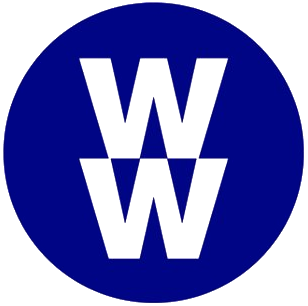

WW International
WW International은 미국에 본사를 둔 기업으로, 체중 감량과 유지, 피트니스, 마인드셋 서비스를 제공한다. 이전 이름은 Weight Watchers International, Inc.이다.
최종 업데이트

WW International는 어떤 브랜드인가
WW International은 체중 감량과 유지, 피트니스, 마인드셋 서비스를 제공하는 미국 기업이며 본사는 뉴욕에 있다. 대표 서비스는 Weight Watchers 종합 식단 프로그램이다.
2019년 기준 이 프로그램은 모바일 앱과 웹사이트를 통한 온라인, 온라인 또는 전화 코칭, 대면 모임의 세 가지 방식으로 이용할 수 있다. 회사는 1963년 Jean Nidetch와 Al·Felice Lippert 부부가 뉴욕 퀸스에서 Weight Watchers Inc.로 출범시켰고, Nidetch는 당시 퀸스에 살던 주부였다.
2018년에는 체중 감량 중심에서 전반적인 건강과 웰니스로 발전한 모습을 반영하기 위해 사명을 "WW"로 바꾸었다.
WW International는 어떻게 시작되고 성장했나
Jean Nidetch는 뉴욕 퀸스에 살던 주부로, 평생 대부분 과체중이었고 여러 유행 다이어트를 시도했으나 체중이 다시 늘었다. 1961년 38세에 214파운드였던 그는 뉴욕시 보건위원회 비만 클리닉이 후원하는 10주 무료 프로그램 "Prudent Diet"에 참여해 20파운드를 감량했다.
클리닉의 모임 방식이 마음에 들지 않자 자신의 아파트에서 매주 지원 모임을 시작했고, 처음 초대한 과체중 친구 여섯 명의 모임은 두 달 만에 매주 40명으로 늘었다. 1962년 10월 목표 체중 142파운드에 도달했고, Al과 Felice Lippert 부부와 함께 1963년 퀸스에서 Weight Watchers Inc.를 출범했다.
첫 공식 모임은 1963년 5월에 열렸고 400명이 참석했다.
WW International의 브랜드 아이덴티티는 무엇인가
집단 모임과 상호 지원에 기반한 체중 감량 프로그램에서 출발해 건강과 웰니스 전반으로 방향을 넓힌 브랜드이다. 창업자 Jean Nidetch의 가정 내 지원 모임이 출발점이다.
WW International의 대표 제품과 서비스는 무엇인가
핵심 서비스는 Weight Watchers 종합 식단 프로그램으로, 2019년 기준 모바일 앱과 웹사이트를 통한 온라인, 온라인 또는 전화 코칭, 대면 모임의 세 가지 방식으로 제공된다. 초기에는 Felice Lippert가 레시피 개발, 영양, 식품 연구를 맡았으며, 1966년 출간된 첫 Weight Watchers 요리책은 1.5 million부 이상 팔렸다.
1968년에는 Weight Watchers Magazine이 창간되어 첫 호를 300,000부 발행했다. Al Lippert는 Weight Watchers 조리식품 라인, 스파, 과체중 아동을 위한 캠프, 저울과 여행용 키트 같은 체중 관리 제품도 시작했다.
WW International는 지금 어떤 상태인가
회사는 2018년 이전 이름인 Weight Watchers International, Inc.에서 WW로 브랜드를 바꾸었다. 이는 체중 감량 중심에서 전반적인 건강과 웰니스로의 발전을 반영한 것이며, 2019년 기준 온라인, 코칭, 대면 모임의 세 가지 방식으로 프로그램을 운영한다.
본사는 미국 뉴욕에 있다.
WW International 로고는 어떻게 변해왔나
자주 묻는 질문
WW International는 어느 나라 브랜드인가요?
WW International는 미국의 헬스·제약 브랜드입니다.
WW International는 언제 설립되었나요?
WW International는 1963년 설립되었습니다.
WW International의 브랜드 아이덴티티는 무엇인가요?
집단 모임과 상호 지원에 기반한 체중 감량 프로그램에서 출발해 건강과 웰니스 전반으로 방향을 넓힌 브랜드이다.
WW International의 대표 제품은 무엇인가요?
핵심 서비스는 Weight Watchers 종합 식단 프로그램으로, 2019년 기준 모바일 앱과 웹사이트를 통한 온라인, 온라인 또는 전화 코칭, 대면 모임의 세 가지 방식으로 제공된다.
WW International는 현재 어떤 상태인가요?
회사는 2018년 이전 이름인 Weight Watchers International, Inc.에서 WW로 브랜드를 바꾸었다.
WW International의 창업자는 누구인가요?
WW International의 창업자는 Jean Nidetch입니다(위키데이터 기준).
WW International의 본사는 어디에 있나요?
WW International의 본사는 뉴욕에 있습니다(위키데이터 기준).
출처와 검증
WW International 관련 참고: 공식 웹사이트 · 위키데이터 Q1929466 · 영어 위키백과. 브랜드명은 한글과 원어를 함께 표기하되 데이터에 없는 표기는 만들지 않습니다. 기원 국가·설립연도는 검수된 정의문에서 확인된 값을 우선하고, 없을 때만 공식 웹사이트 URL이 일치하는 위키데이터 개체의 값을 씁니다. 탄생일의 월·일은 위키데이터, 위키백과 정보상자, 본문 가운데 같은 연월로 확인되는 값만 싣고, 출처끼리 다르면 싣지 않습니다. 위키데이터 값은 2026-11-15 기준입니다.